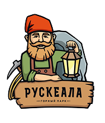
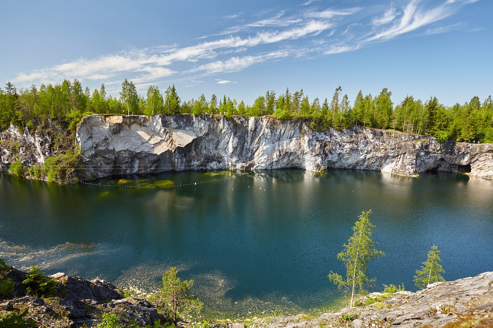
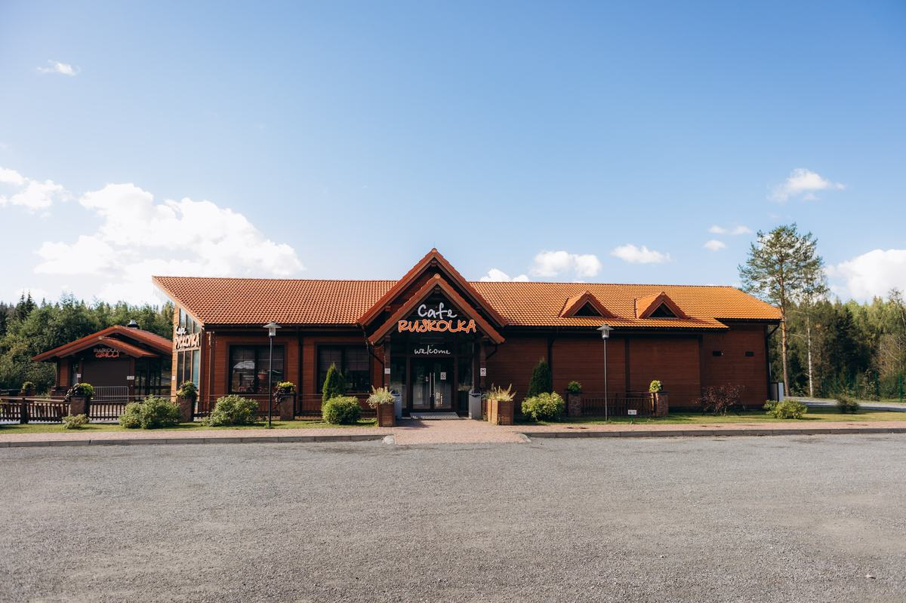

Вход в парк
Входной билет даёт самостоятельное посещение парка: прогулочные дорожки, видовые площадки и инфраструктура для гостей.
Полный билет 750 ₽
Горный Парк Рускеала Карелия, Мраморная 1 +7 (921) 621-50-50Карелия, Сортавальский округ
Мраморный каньон, подземные маршруты, вода и карельский лес — спокойное путешествие в сердце северной природы.
Покупка билета откроется в отдельной системе.
Что посмотреть
Пройдите по дорожкам и видовым площадкам, загляните к Мраморному каньону, выберите экскурсию и погрузитесь в тайну глубины древнего мрамора.

Билеты и подготовка
Входной билет даёт самостоятельное посещение парка: прогулочные дорожки, видовые площадки и инфраструктура для гостей.
Полный билет 750 ₽Для льготного билета нужен подтверждающий документ. Часть льготных и бесплатных билетов оформляется только в кассах.
от 400 ₽Экскурсии, прогулки по воде и активный отдых приобретаются отдельно от входного билета.
от 950 ₽/челПеред поездкой проверьте доступность услуг и возьмите документы для льготного билета, если они нужны.
Экскурсии и развлечения

До 60 мин., дистанция 850 м, возрастное ограничение 7+.
2500 ₽/чел
Длительность 1 ч 15 мин, дистанция 1600 м.
950 ₽/чел
Длительность 1 ч 45 мин, дистанция 2600 м.
1150 ₽/чел
До 20 мин., группа до 20 чел., 0+.
300 ₽/чел
Наземная часть парка в виртуальном формате.
650 ₽/чел
40 минут, до 4 человек, возрастное ограничение 3+.
2200 ₽
30 мин., вместимость платформы до 10 чел., 3+.
600 ₽/чел
Время в пути в одну сторону - 10 минут. Отведенное время на прогулку - 1 час.
250 ₽/чел
Продолжительность от 1 часа, дистанция от 6 км до 100 км, 16+.
8000 ₽/2 чел
Дистанция 400 м, максимальный вес 120 кг, возрастное ограничение 7+.
3000 ₽/чел
Прыжок с веревкой. Высота 20 м, возрастное ограничение 7+.
4000 ₽/чел
Погружения в Мраморном каньоне.
9000 ₽/чел
Панорамные качели над Светлым озером, возрастное ограничение 7+.
2000 ₽/чел
Прокат SUP-бордов, байдарок, рафтов.
от 500 ₽
Личный экскурсовод для самостоятельного путешествия.
500 ₽
3D-тур с хранителями парка.
550 ₽/чел
Игровая территория доступна при самостоятельном посещении парка по входному билету.
Входит в посещениеВозрастное ограничение 7+.
2500 ₽/челПодземный маршрут с ограничением 7+.
2500 ₽/челДо 20 мин., группа до 20 чел., 0+.
300 ₽/челДлительность 1 ч 15 мин, дистанция 1600 м.
950 ₽/челМрамору Рускеала около 2 миллиардов лет.
Докембрийские породы сформированы еще до появления сложных форм жизни на Земле.Как добраться
Поезд отправляется с Финляндского вокзала до Сортавала. От Сортавала до парка: автобус, службы такси или ретропоезд.
Отправление от автовокзала «Северный» у метро Девяткино. Время в пути до Сортавала ориентировочно 5-6 часов.
Маршрут: Санкт-Петербург - КАД - Приозерск - А-121 - Сортавала - Рускеала. Расстояние 310 км, ориентир 4-5 часов.
Маршрут идет через Санкт-Петербург и Сортавала. Путь на автомобиле: примерно 1300-1400 км.

Организация питания
В парке работают точки питания для отдыха до или после прогулки: горячие и холодные напитки, выпечка, завтраки, комплексные обеды, блюда европейской и карельской кухни.
Перед визитом
Некоторые услуги зависят от сезона, погоды и расписания. Лучше уточнить детали перед поездкой.
К контактамДля льготного билета нужен подтверждающий документ. Бесплатные билеты оформляются в кассах.
К билетамКнопка откроет отдельную систему оформления билетов в новой вкладке.
Купить билетFAQ
Посещение Горного Парка Рускеала без получения дополнительных услуг.
Да, в парке есть оборудованные дорожки и видовые площадки.
Кнопка «Купить билет» открывает отдельную систему оформления. Бесплатные и часть льготных билетов оформляются в кассах.
Да, для категорий гостей с правом на льготный билет нужен подтверждающий документ.
Контакты